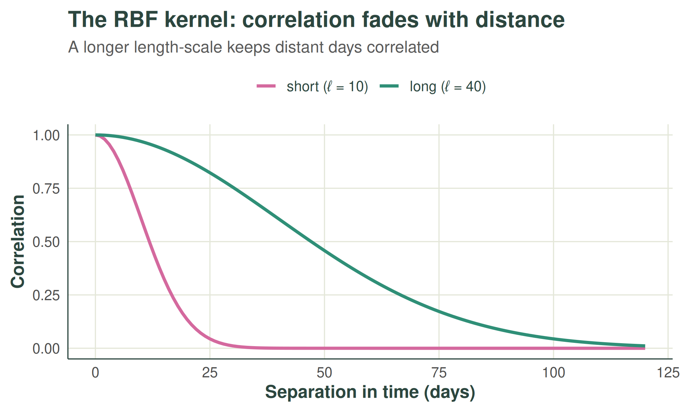
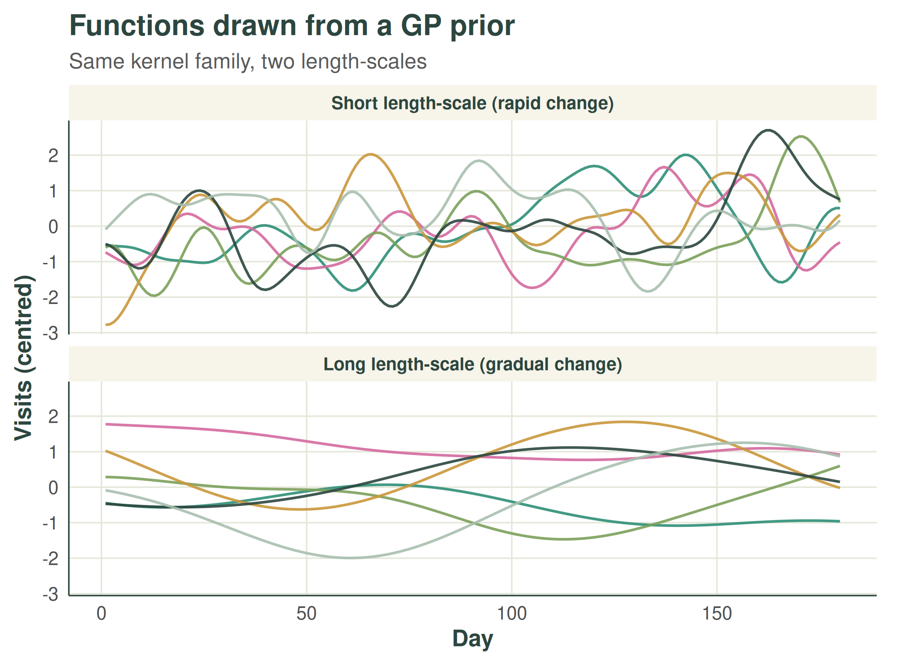
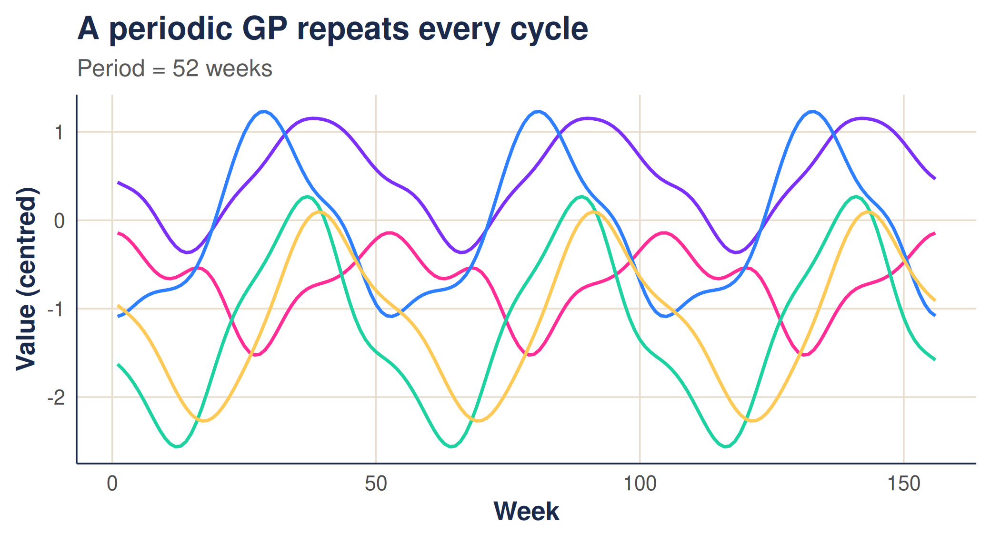
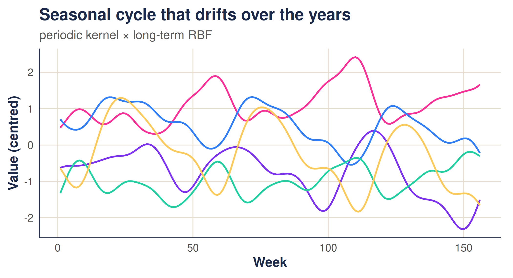
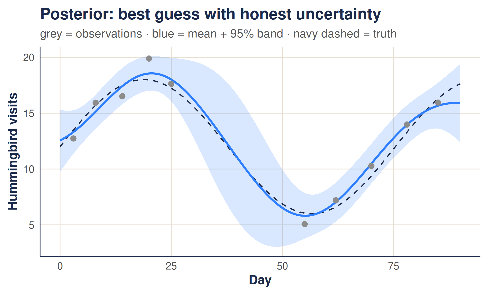

Gaussian processes: a gentle introduction
gaussian-processes.RmdThis vignette introduces Gaussian processes from the ground up: what they are, the role of the kernel, and how they turn prior beliefs and a handful of observations into a prediction with honest uncertainty. No prior exposure is assumed. The companion article, The weave walkthrough, then puts these ideas to work on real, gappy surveillance counts.
1. Why Gaussian processes?
Many quantities we care about change smoothly, but in ways we cannot write down in advance: rainfall through the year, temperature, website traffic, or the number of malaria cases reported by a health facility from one week to the next. We rarely have a tidy equation for these patterns — and we usually observe them only sparsely and with noise.
The task, then, is to infer the underlying pattern from limited, imperfect observations, without committing in advance to a fixed shape such as a straight line or a particular curve. We would also like to know how confident we should be: a single best guess is far less useful than a guess accompanied by a credible range.
A Gaussian process (GP) meets both needs. It is a flexible, probabilistic way to model an unknown function that lets the data shape the result, and it quantifies uncertainty as a natural by-product.
2. What is a Gaussian process?
A Gaussian process is a probability distribution over functions, in the same way that a normal distribution is a probability distribution over numbers.
A normal distribution says: a random number is likely to fall near the mean, with a spread set by the variance. A Gaussian process says: a random function is likely to take shapes near a mean function, with the variability between nearby points set by the kernel.
Rather than commit to a fixed equation, a GP encodes beliefs about how a function behaves: whether nearby points tend to be similar, how far that similarity reaches, and how much the function can vary overall. Every function consistent with those beliefs is possible; the GP assigns each a probability.
A Gaussian process is defined by a mean function and a kernel (or covariance function) . For simplicity we usually take the mean to be zero,
because the kernel captures the structure we care about (smoothness, periodicity, and so on), and a non-zero mean can always be added later. We then write
This says that for any finite set of input points , the function values follow a multivariate normal distribution with a zero mean vector and a covariance matrix whose entries are . The kernel is the whole story: it determines how the value at one point relates to the value at another.
3. The kernel: encoding beliefs
To make this concrete, imagine a hummingbird feeder in the garden, and that we want to model the number of hummingbirds visiting over time.
We have no equation for how that number changes, but we do hold some sensible beliefs:
- the count on one day is likely to resemble the count on nearby days;
- that resemblance fades as days grow further apart;
- the count varies gradually rather than erratically.
These are exactly the assumptions a kernel can express.
3.1 The RBF kernel and its length-scale
The radial basis function (RBF) kernel — also called the squared exponential — is the most widely used choice. It encodes the idea that points closer together are more strongly correlated, with the correlation decaying smoothly with distance:
sets the overall variability (how far the function ranges from its mean), while , the length-scale, sets how quickly the correlation fades with distance. A short length-scale allows the count to change rapidly from day to day; a long one makes it change only gradually.
The correlation as a function of separation in time is simply the kernel evaluated against distance. A longer length-scale keeps points correlated over a wider gap:

We can now draw functions from the GP defined by each
kernel. Each draw is one plausible history of feeder visits consistent
with our beliefs. The package’s quick_mvnorm() samples such
a function efficiently, which we use to produce the draws below.
With a short length-scale the draws are rough and turn over quickly; with a long one they are smooth and slow:

3.2 Periodicity: capturing the seasons
Feeder visits — like malaria cases — often follow a yearly rhythm. The periodic kernel expresses the belief that points one full period apart are alike, regardless of how much time has passed:
where is the period (say 52 weeks) and controls how sharply the function rises and falls within each cycle. Draws from a periodic GP repeat their shape from one cycle to the next:

3.3 Combining kernels
Kernels can be combined. Adding them lets several patterns coexist;
multiplying them makes one pattern modulate another.
weave uses a product in time — a periodic kernel multiplied
by a long length-scale RBF — so the seasonal cycle is present every year
but is free to drift slowly in amplitude and level over the long run.
The package’s time_kernel() builds exactly this
combination:

In space, weave uses an RBF kernel on the distance
between sites, so nearby facilities are expected to behave alike. Space
and time are then combined into a single space-time covariance with a
separable structure,
,
which keeps the model fast — a point the walkthrough returns to. Three numbers
control all of this: the spatial length_scale, the
periodic_scale, and the long_term_scale.
Estimating them from data is the subject of that article.
4. From prior to posterior: conditioning on data
So far we have only described beliefs — the prior. The power of a GP is that once we observe some data, we can update those beliefs exactly. The result is the posterior: the distribution over functions that remain consistent with both our kernel and the observations.
Suppose we observe values at inputs , each with independent noise of variance , and we want the function at new inputs . Writing for the kernel evaluated between observed inputs, between new and observed inputs, and among the new inputs, the posterior is Gaussian with
The posterior mean is the GP’s best guess; the posterior variance is its honesty. Near observations the function is pinned down and the uncertainty is small; away from them the GP reverts towards the prior mean and the uncertainty grows. Crucially, the band widens by itself in gaps — we never have to tell it to.
Let us condition on a handful of noisy feeder counts. For this illustration we treat the counts as continuous measurements and leave the count-specific machinery to the walkthrough. Note the deliberate gap in the observations between days 25 and 55.
# a smooth underlying pattern we pretend not to know
true_fn <- function(x) 12 + 6 * sin(x / 12)
x_obs <- c(3, 8, 14, 20, 25, 55, 62, 70, 78, 85) # note the gap 25 -> 55
y_obs <- true_fn(x_obs) + rnorm(length(x_obs), sd = 1.2)
x_star <- seq(0, 90, length.out = 200)
ell <- 12 # length-scale
sigma_n <- 1.2 # observation noise
# RBF kernel between two sets of inputs, via outer-difference distances
rbf <- function(a, b, theta) rbf_kernel(outer(a, b, "-"), theta = theta)
ybar <- mean(y_obs) # model the centred data
Kxx <- rbf(x_obs, x_obs, ell) + sigma_n^2 * diag(length(x_obs))
Ksx <- rbf(x_star, x_obs, ell)
Kss <- rbf(x_star, x_star, ell)
Kxx_inv <- solve(Kxx)
post_mean <- ybar + Ksx %*% Kxx_inv %*% (y_obs - ybar) # posterior mean
post_var <- pmax(diag(Kss - Ksx %*% Kxx_inv %*% t(Ksx)), 0) # posterior variance
post_sd <- sqrt(post_var)
post <- data.frame(
x = x_star,
mean = as.vector(post_mean),
lower = as.vector(post_mean) - 1.96 * post_sd,
upper = as.vector(post_mean) + 1.96 * post_sd
)The posterior mean threads through the observations, and the 95% band tightens where data is plentiful and balloons across the gap — an honest admission that the feeder count there is genuinely uncertain.

This single picture is the essence of the method. Everything in the walkthrough is a scaled-up version of it: instead of one feeder over time, we condition on many facilities across both space and time, we estimate the kernel’s length-scales from the data rather than fixing them by hand, and we account for the fact that counts are noisy integers.
5. Where this goes next
With the intuition in place, the walkthrough shows how
weave:
- estimates the three kernel length-scales directly from observed counts, by maximising the Gaussian-process marginal likelihood; and
-
predicts the underlying rate at every facility and
week — filling in missing weeks and attaching a 95% prediction interval
— with
gp_predict().
The same prior-to-posterior logic seen here carries through; the walkthrough adds the spatial dimension, learns the kernel from data, and handles counts honestly.